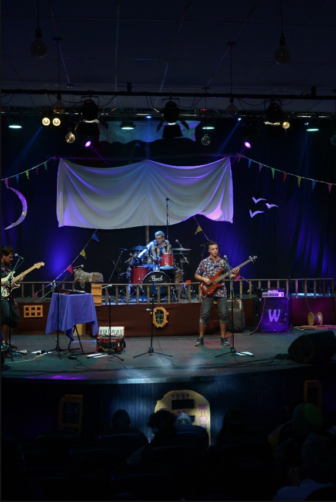
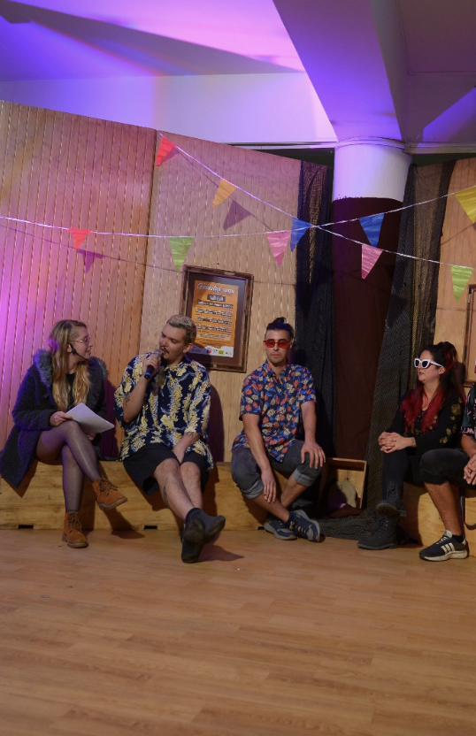
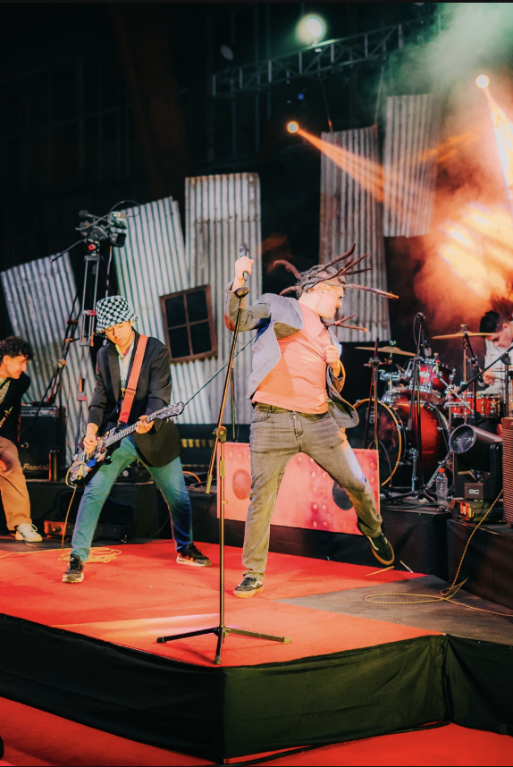
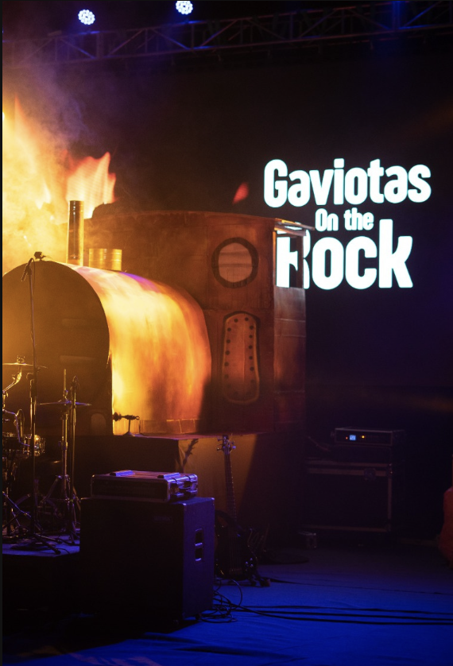

Fundación Cultural Tierra de Gaviotas
Lidero el diseño e implementación de estrategias comunicacionales para una fundación cultural sin fines de lucro en Ancud, Chiloé.
Ver más
Festival de Gaviotas
Festival multicultural anual en Ancud, Chiloé, que promueve expresiones artísticas y el patrimonio del Archipiélago.
Ver más
Gaviotas on the Rock
Evento anual que celebra el Día Nacional del Rock, fusionando música y patrimonio local en Ancud, Chiloé.
Ver más
Formación y Vinculación Comunitaria
Espacios formativos abiertos a la comunidad para promover el acceso a la cultura y la participación activa en el territorio.
Ver más
Parque Mawünko
Plan de difusión para proyecto financiado por el Gobierno Regional de Los Lagos sobre la unión de las aguas del Parque Mawünko.
Ver más
Artesanales de Chiloé
Creación y desarrollo del proyecto Artesanales de Chiloé, desde la construcción de marca hasta la implementación de estrategias de comunicación.
Ver másMunicipalidad de Quinta de Tilcoco
Profesional de apoyo en cultura y educación, participando en la planificación del Museo y Centro Cultural de Quinta de Tilcoco.
Ver más